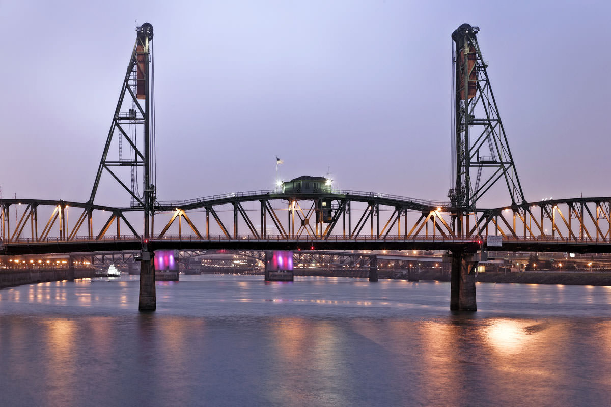
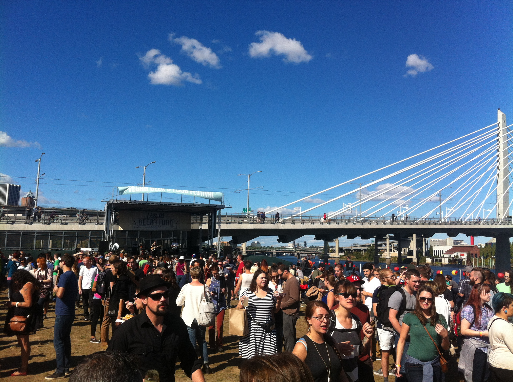
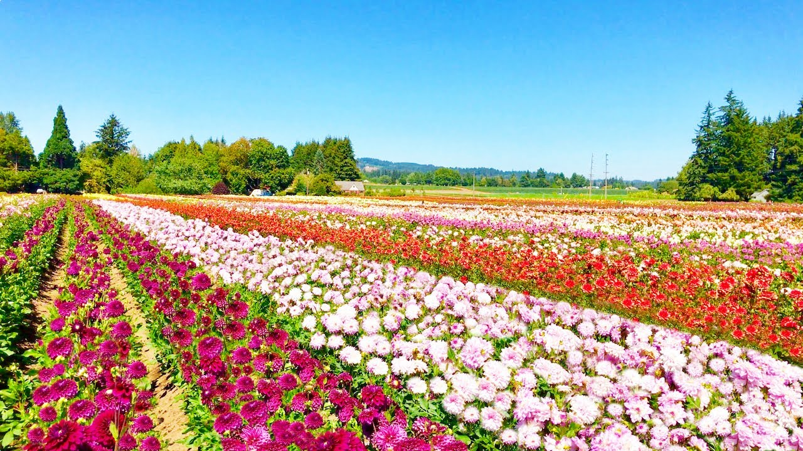

In The City
SUP on the Willamette under Hawthorne Bridge

-
Tip: Rent from Next Adventure.
Further Out
Portland Vegan Beer & Food Festival

-
This event features the region's best craft beer, vegan eats, live music, and more.
-
Best time to go: This event takes place in June.
Dahlia Festival at Swan Island Dahlia's

-
Stroll through almost 50 acres and a beautiful display garden of stunning dahlias featuring over 370 varieties.
-
Best time to go: August-September.